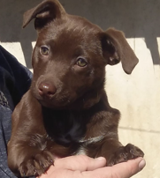

La vida de Sasha
En un pequeño pueblo llamado Colinas Caninas, había una perrita pitbull llamada Sasha. A pesar de ser solo
una cachorra de 5 años, Sasha era increíblemente simpática y cariñosa. Su pelo suave y ojos brillantes la
convertían en la favorita de todos en el vecindario. Pero Sasha tenía un sueño inusual para una perrita:
quería ser presidenta.
Todo comenzó un soleado día de verano cuando Sasha vio en la televisión a personas hablando sobre política.
Aunque no entendía completamente el significado de las palabras que decían, sintió una chispa de
inspiración. Decidió que quería hacer del mundo un lugar mejor para los perros y los humanos por igual.
Con determinación en su mirada, Sasha se propuso aprender todo sobre la política. Pasaba horas observando las noticias en la televisión y escuchando las conversaciones de los adultos en el parque. Con el tiempo, comenzó a comprender los problemas que enfrentaba su comunidad, desde la falta de parques para perros hasta la necesidad de un refugio de animales más grande.
Sasha no era solo una perrita simpática; también era inteligente y astuta. Decidió postularse para presidenta del Club de Mascotas del vecindario, su primer paso hacia la política. Con su carisma y habilidades de persuasión, ganó las elecciones por un gran margen. Ahora tenía una plataforma para hacer cambios reales en su comunidad.
Su primera acción como presidenta fue organizar un evento para recaudar fondos destinados a construir un nuevo refugio de animales. Sasha y sus amigos perros se pusieron a trabajar, vendiendo golosinas y juguetes para mascotas hechos a mano. Pronto, recaudaron suficiente dinero para comenzar la construcción del refugio, lo que hizo que Sasha se sintiera increíblemente orgullosa.
Pero Sasha no se detuvo ahí. También se enfocó en mejorar los parques para perros en Colinas Caninas. Trabajó incansablemente para persuadir a las autoridades locales de la importancia de tener espacios seguros y divertidos para que los perros pudieran jugar y socializar. Con su determinación y pasión, logró que se construyeran nuevos parques para perros en todo el pueblo.
La dedicación de Sasha no pasó desapercibida. La gente comenzó a admirarla y a respetarla por su valentía y liderazgo, a pesar de ser solo una perrita.
Se convirtió en un modelo a seguir para todos en el pueblo, mostrándoles que no importa quién seas; puedes marcar la diferencia si trabajas arduamente por lo que crees.
Finalmente, llegó el día de las elecciones para la presidencia del pueblo. Sasha decidió postularse, y con su carisma, inteligencia y corazón bondadoso, ganó el corazón de la mayoría de los votantes. Se convirtió en la primera perrita pitbull en ser presidenta de Colinas Caninas.
Durante su mandato, Sasha trabajó incansablemente para hacer del pueblo un lugar mejor para todos, humanos y perros por igual. Su amor por la comunidad y su determinación para hacer el bien inspiraron a todos a unirse y crear un lugar donde la amistad y la compasión florecieran.
Y así, la historia de Sasha, la presidenta peluda, se convirtió en un ejemplo atemporal de cómo un pequeño y simpático ser puede cambiar el mundo con determinación, amor y un ladrido amistoso a la vez.